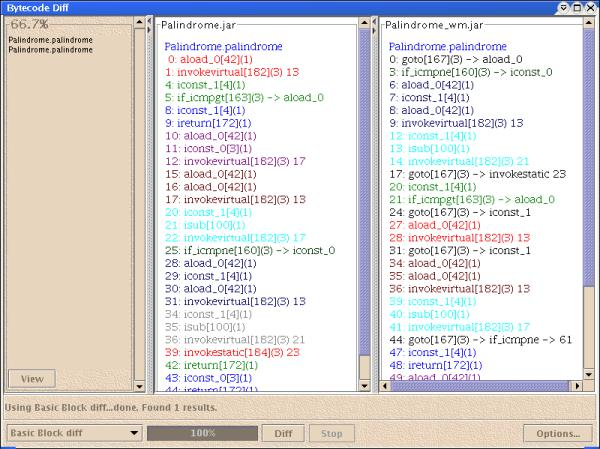

You can view the differences between the bytecode contents of two jar-files from the Diff pane. You may diff files based on different criteria by selecting different diff algorithms from the combo box in the diff pane. Some algorithms compare classes while others compare methods.
| Filter out pairs of objects that have the same name | If checked, program objects (e.g. methods, classes) with the same names are not displayed in the results pane. |
| Filter out pairs of objects that appear to be identical | If checked, program objects (e.g. methods, classes) that appear equivalent are not displayed in the results pane (does not look at object names). |
| Compare all pairs of objects | If selected, the diff algorithm will compare all pairs of objects. For example, if the algorithm is a method comparer, all pairs of methods will be compared. |
| Compare only objects with the same name | If checked, only program objects (e.g. methods, classes) with the same names are compared by the diff algorithm. Useful when inspecting a watermarked application that has not been obfuscated. |
| Show pairs of objects with similarity greater than or equal to filter | Return only those pairs of objects whose similarity is greater than or equal to the value of filter. Algorithms use this value to speed up their comparisons; i.e., once a pair of objects is known to have similarity less than filter, it is free to move on to the next pair. By default, filter is set at 50%. |
| Ignore methods with number of instructions less than: n. | Method diff algorithms return only those pairs of methods in which both methods have n or more instructions. Useful for filtering out uninteresting methods. By default, n is set at 10. |
Compares methods. Similarity is based on the length of the longest common subsequence (LCS), which is displayed in red in each method.
Compares methods. The diff criteria is instruction opcode. Similarity is based on the length of the LCS, which is displayed in blue in each method.
Compares methods. The algorithm uses the positional relationship between variable uses as diff criteria.
public class BakerTest1 {
public static void main(String[] args){
int a = 8, b = 9, c = 7, d = 20, f = 12;
System.out.print(b+a);
Math.round(c+f);
}
}
public class BakerTest2 {
public static void main(String[] args){
int dummy = 20, a = 8, b = 9, c = 7, e=11, f=12;
System.out.print(b+a);
Math.round(c+f);
}
}


Method comparer. Similarity is based on the number of basic blocks in method1 that are also present in method2. The display panes show the basic blocks color-coded, such that equivalent blocks will be the same color.
public class Palindrome {
public static boolean palindrome(String s){
if(s.length() <= 1)
return true;
else if(s.charAt(0) == s.charAt(s.length()-1))
return palindrome(s.substring(1,s.length()-1));
else
return false;
}
}
Method comparer. Uses a naive (slow) algorithm to find the maximum common subtree of two method CFG's. Similarity is measured as the ratio of the size of this subtree to the size of the larger method's CFG. The basic blocks are colored according to their positions in the subtree. If a block is not in the common subtree, it is colored black. Note that this algorithm does not consider instructions, but only structure of the CFG.
Class comparer. Performs a literal comparison of constant pools. Similarity
is based on the length of the LCS between the two constant pools.